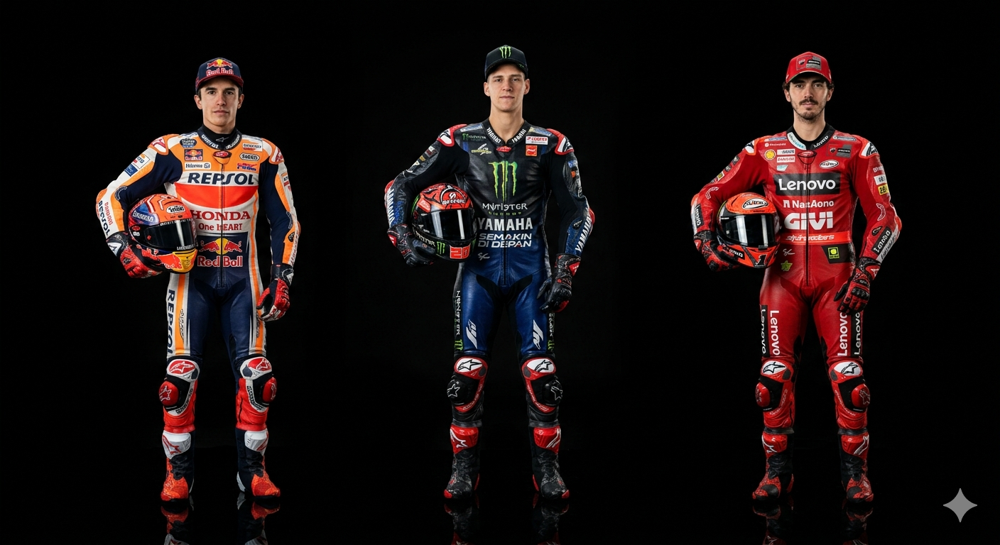

Key Characteristics of European Motorcycles
Advanced Engineering: European manufacturers are known for pioneering innovations such as electronic rider aids, traction control systems, advanced suspension technologies, and high-performance braking systems.
Premium Build Quality: High-quality materials and meticulous attention to detail contribute to durability, reliability, and rider comfort.
Distinctive Design: European motorcycles often feature unique styling that blends tradition with modern aesthetics.
Performance-Oriented: Many European bikes are designed with racing heritage in mind, offering exceptional handling, acceleration, and riding dynamics.
Versatility: European brands produce a wide range of motorcycles, including sport bikes, touring motorcycles, adventure bikes, naked bikes, cruisers, and electric motorcycles.
